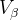

| テスト理論 |
| テスト理論 |
一般化可能性理論は、複数の観点から行われた評価の信頼性も評価することができる。
Table 10 は、Table 8 と同じ大会における、1回目のエアの採点結果である。 この場合、エアはターンとは異なる審判によって採点されている。
FIN |
CAN |
|
Justine DUFOUR-LAPOINTE |
2.1 |
2.1 |
Chloe DUFOUR-LAPOINTE |
1.8 |
1.8 |
Hannah KEARNEY |
1.9 |
1.7 |
Aiko UEMURA |
1.7 |
1.7 |
Britteny COX |
1.7 |
1.7 |
Eliza OUTTRIM |
1.6 |
1.6 |
平均 |
1.80 |
1.77 |
標準偏差 |
0.16 |
0.16 |
このときの測定モデルは、
| (97) |
のように表せる。 ここで、 は観点による得点の違いである。 この例では、採点者が観点によって異なる。 採点者による得点の変動 は、観点に採点者 が含まれることを意味している。
が含まれることを意味している。
この例では、得点全体の変動は式 (87) とは異なる形で分割される。 詳細は割愛するが、これにもとづいて、、 を算出すると、Table 11 のようになる。
を算出すると、Table 11 のようになる。
|
|
|
0.067349 |
0.000428 |
0.012365 |
これをもとに、仮にターンもエアも各1人の審判によって採点された場合の一般化可能性係数を算出すると、以下のようになる。
| (98) |
この値は、式(93)におけるターンのみを1人の審判が採点した場合の信頼性よりもさらに低い。
Table 12 は、ターンとエアを別の審判が採点する場合、それぞれを担当する審判の人数と評価の信頼性の関係を示したものである。 例えば、信頼性0.980が必要なのであれば、それぞれ9人の審判が必要であるということがわかる。
人数 |
1 |
2 |
3 |
4 |
5 |
6 |
7 |
8 |
9 |
10 |
信頼性 |
0.845 |
0.916 |
0.942 |
0.956 |
0.965 |
0.970 |
0.974 |
0.978 |
0.980 |
0.982 |
| テスト理論 |